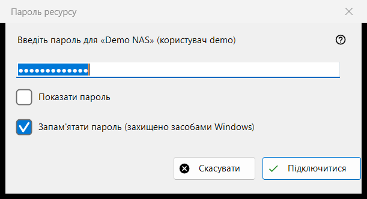
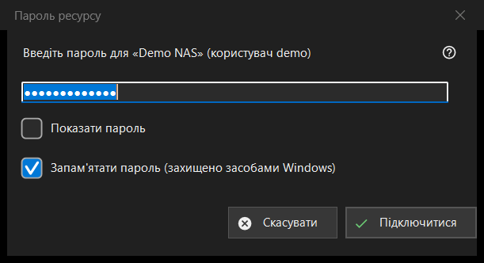

Пароль ресурсу
Призначення
Запитує пароль збереженого сервера чи мережевої папки. Вікно з'являється, коли ви відкриваєте ресурс без збереженого пароля, коли збережений пароль відхилено, коли пароль потрібен для теки призначення на сервері або для імпорту; для теки під PIN-кодом вікно називається «PIN-код ресурсу».


Порядок дій
- Введіть пароль; він схований крапками, а «Показати пароль» його показує.
- Вирішіть, чи залишати позначеним «Запам'ятати пароль (захищено засобами Windows)».
- Натисніть «Підключитися» (Enter) або «Скасувати» (Esc), щоб відмовитися.
Елементи вікна
Пароль
Запит називає ресурс і користувача. Пароль береться точно так, як набрано, пробіли не відкидаються. Порожнє поле дає «Введіть пароль». «Показати пароль» спочатку вимкнено.
Запам'ятати пароль
Прапорець за замовчуванням позначено. Якщо його позначено, пароль зберігається в зашифрованому Windows вигляді для вашого облікового запису, причому лише після того, як підключення з ним вдалося; якщо ні - пароль живе в пам'яті лише до кінця поточного запуску. Прапорця немає там, де пароль однаково зберігається (наприклад, під час імпорту файлу налаштувань), і в режимі PIN-коду.
Відхилений пароль
Якщо сервер відхилив попередній пароль, угорі з'являється рядок «Пароль не підійшов. Введіть його ще раз.», і вікно питає знову.
Режим PIN-коду
Для теки під PIN-кодом вікно називається «PIN-код ресурсу» і просить PIN-код указаного ресурсу. Прапорця «запам'ятати» немає, а відхилений PIN-код супроводжується рядком «PIN-код не підійшов. Введіть його ще раз.»